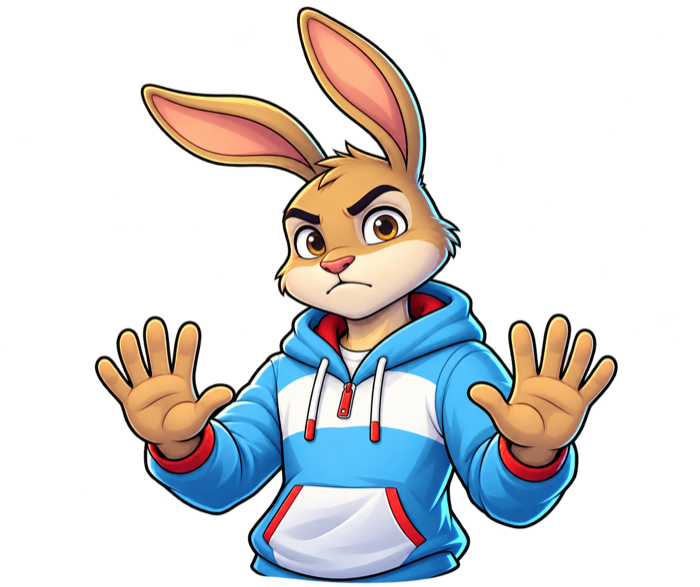

Izere Money Quest · Advanced path
From equity
to exit.
Build a fictional company, raise capital, face difficult trade-offs and learn how founder wealth can be created—or lost.
Start the founder journey ↓
Ownership is only the beginning.

Before the valuation
Build boldly.
Read the cap table.
Founder wealth is not simply the value of a company. It depends on what you own, what you give up, how long the company can survive and what happens when circumstances change.
- 01Create value
Start with customers, useful work and a company worth building.
- 02Finance the journey
Understand runway, dilution and the trade-offs behind every funding round.
- 03Protect perspective
Separate valuation from cash, ownership from control and ambition from survivorship bias.
The founder practice room
Make the decision.
Watch ownership move.
Seven fictional moments show how funding, dilution, setbacks and exits reshape both the company and the founder’s stake.
Seven decisions · One founder journey
Build the company.
Understand the wealth.
Every number is part of a fictional learning scenario. Your score rewards judgement, not the highest valuation or fastest exit.
Mission 01 · Ownership
Start the company.
🇱🇺LOCAL LENSSee the Luxembourg perspective+
The five wealth engines
Founder wealth is a system.
Not a salary.
Unlock each mechanism inside the game, then return here to see how the pieces connect.
Equity ownership
Company shares can create substantial paper wealth, while remaining volatile and difficult to spend.
Recycling gains
Some founders use proceeds from one venture to finance the next—taking fresh concentration risk.
Stock-based compensation
Options and performance shares link compensation to company value, with conditions and downside.
Borrowing against shares
Share-backed borrowing can avoid an immediate sale but introduces collateral and margin-call risk.
Connected ventures
Reputation, talent and capital can move across companies, but this advantage is unusually difficult to reproduce.

Keep the story honest
One famous winner
does not prove the path.
Founder stories can hide failed ventures, dilution, illiquidity, leverage and luck. Izere teaches the mechanism and the downside together.